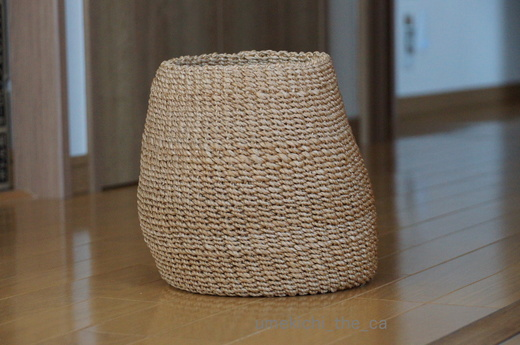
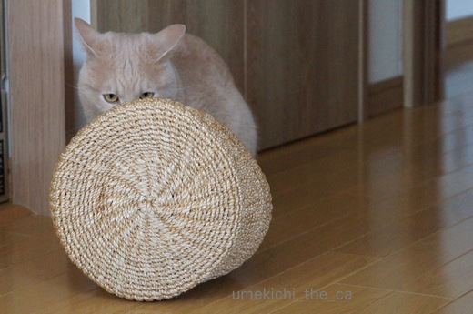
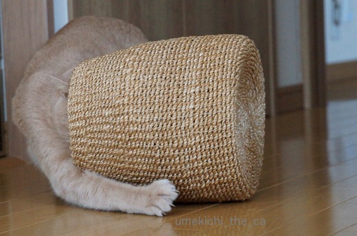
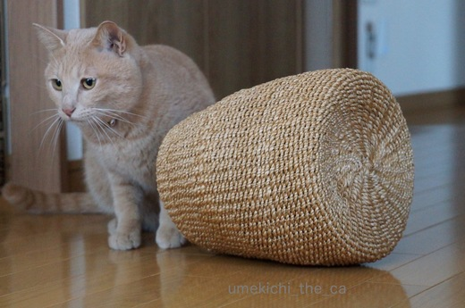
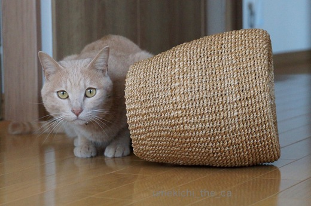
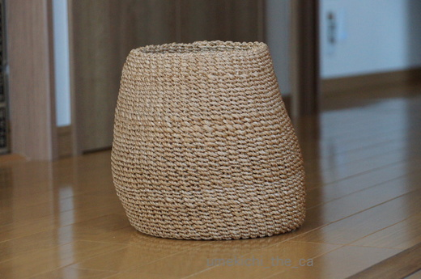
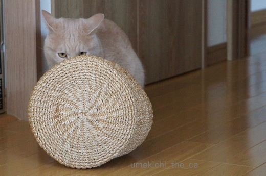
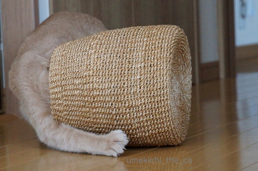
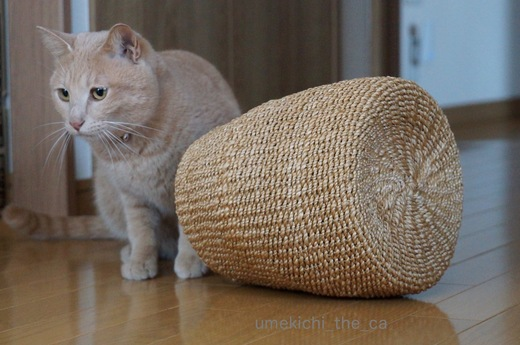
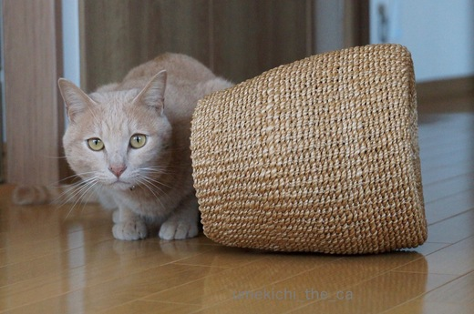

成長しているんですよ [梅吉]
かつてリビングで使っていたゴミ箱。

アート作品のように不思議な形になってしまいました。
このアートを作り出したのは・・・

![[猫]](https://blog.ss-blog.jp/_images_e/101.gif) なかにはいったらおもろいんやで。
なかにはいったらおもろいんやで。

どーしんにかえってころげまわってみましょか。

あたまを入れて・・・・

このままずい〜〜〜っと・・・・

なんかおかしいんちゃうか。

ごみばこ、ちっさなったやろ。
梅吉さんはこんなふうに遊びたかったようですよ。
幼い頃はゴミ箱が好きで好きで。
しょっちゅうこんなふうに転げ回っていました。
ゴミを入れたら全部出してしまうので使用不可。梅吉のおもちゃとなったのでした。
そしてゴミ箱は不思議な形に^^;
梅吉の体が大きくなってゴミ箱で遊ばなくなった今でも
我が家のリビングにはゴミ箱はありません。
少々面倒ですがその都度キッチンのゴミ箱へ捨てに行っています。
それほど広い家じゃないからね〜。
みなさんはお家の中のゴミ箱ってどうしていますか？
ちなみに我が家はキッチンに一つ（燃やせるゴミ用・プラゴミ用の連結式）と
寝室に一つの計二つです。
小さなゴミ箱といえど一つものが減ると狭い家がすっきりしたような気になります![[ぴかぴか（新しい）]](https://blog.ss-blog.jp/_images_e/150.gif)
 ↑ガブッと一押し↑
↑ガブッと一押し↑

アート作品のように不思議な形になってしまいました。
このアートを作り出したのは・・・






梅吉さんはこんなふうに遊びたかったようですよ。
幼い頃はゴミ箱が好きで好きで。
しょっちゅうこんなふうに転げ回っていました。
ゴミを入れたら全部出してしまうので使用不可。梅吉のおもちゃとなったのでした。
そしてゴミ箱は不思議な形に^^;
梅吉の体が大きくなってゴミ箱で遊ばなくなった今でも
我が家のリビングにはゴミ箱はありません。
少々面倒ですがその都度キッチンのゴミ箱へ捨てに行っています。
それほど広い家じゃないからね〜。
みなさんはお家の中のゴミ箱ってどうしていますか？
ちなみに我が家はキッチンに一つ（燃やせるゴミ用・プラゴミ用の連結式）と
寝室に一つの計二つです。
小さなゴミ箱といえど一つものが減ると狭い家がすっきりしたような気になります

カフェオレ色の梅吉

梅吉 2023年8月10日 永眠


梅吉と出会った譲渡会

犬猫の理由なき殺処分ゼロ
妄想広告
UMEKICHI 光

爆発的に早い！
時々攻撃的！
Thanks to Mr.Boss365
爆発的に早い！
時々攻撃的！
Thanks to Mr.Boss365

梅吉くんのお気に入りゴミ箱、なんだか猫チグラに見えてきました！
幼い頃のスリムな(失礼)梅吉くん、ヤンチャしまくってる感がありますね。元気でよろしい(オッさんか)。
ゴミ箱が少ないとは、ゴミ自体も少ないスッキリした生活が見えまする…
うちはゴミ箱多いです…この間も夜中にどかーんと音がしたと思ったらゴミ箱ひっくり返ってました（・◇・）
by BillK-ko (2017-03-31 18:36)
梅吉さん！楽しそうに遊んでいますねぇ～♪
ゴミ箱！！ｓａｒａはイタズラしなかったので
そのまま置いていましたが、
気が付いて欲しいアピールの時は
カリカリと前足でかいて音を出していました！！
Ｌｅａが来てから・・・ゴミ箱は床に置けなくなりました(;^_^A
by きぃ (2017-03-31 19:37)
梅吉さんのお手手かきかき(?)が可愛い!
猫って自分が大きくなって行く自覚がないみたいですよね。
ウチではゴンが来てから全てのゴミ箱をフタ付きに変えました。
by zombiekong (2017-03-31 20:55)
あはは、子供の頃の梅吉さんってばゴミ箱で思う存分楽しんでたんですねぇ( ^ω^ )
ニャンコはお気に入りは何でも自分用にカスタマイズしちゃうけど、これはちょっとサイズが(⌒-⌒; )
うちはゴミ箱でいたずらはしないので各部屋にありますが、お腹空いたアピールをしてももらえない時は、ゴミ箱に入れてあるビニールの端っこをザリザリ舐めます(ｰ ｰ;)
by ニッキー (2017-03-31 20:58)
カゴに入って、一回転するのが早いですね〜
普通には作り出せない芸術作品となりましたね（笑）
我が家も結婚以来、リビングにはゴミ箱を置いていません。
キッチンまで捨てに行きます。
リビングで、ゴミってあまり出ませんよね。
キッチンには分別用のゴミ箱が3個あります。
分別さえなければゴミ箱をゼロにできます。
いわゆる、狭い部屋です（笑）
娘の部屋には（化粧をするので）小さなゴミ箱があります。
夫は病気をしてから自分の近くに、取っ手付きの紙袋を引っ掛けています。
断固としてゴミ箱は置かせません。
by kiki (2017-03-31 21:17)
ごみ箱のごみが何が入ってるかきになって遊びだしたのでしょうかね？
猫は基本的に入れるモノ好きですよね。
ロッキーもごみを取り出すので一時期蓋つきのごみばこにかえた事があります。今はずいぶんしなくなりましたが。
by みぃにゃん (2017-03-31 22:36)
子梅吉さん、楽しそう♪ ^^)
我が家にもこのカゴを置いておいたら、
梅吉さんやってくるかなあ。^^;
by yes_hama (2017-03-31 22:57)
うちは、小雨がゴミ箱好きですー
生ゴミと缶ビンはフタ付きのやつですー
他のゴミ箱はニトリ産の四角いゴミ箱でコロンコロン出来ないけど
めっちゃ倒してがったんがったんしてますｗ
んで、すみちゃんに怒られるって感じですｗ
by sumi-cyan (2017-03-31 23:27)
尺八があったら虚無僧みたい(≧▽≦)
うちは台所に45リットルの大きな蓋付きゴミ箱のみで
あとは小さなビニール袋をあちこちに引っかけてあります。
貯まったら口を縛って台所のゴミ箱に捨てて、また新しいビニールを。
なのでいたずらの対象にはなっていないです〜
by も〜 (2017-03-31 23:43)
ゴミ箱選びは猫との知恵比べですよね(*^▽^*)
初代ゴミ箱はフタに丸い穴のついた籐製のもの。即座にこてつが飛び込みひっくり返して中身をぶちまけお払い箱に^^;
2代目はカパッと引き出すタイプを置きましたが、隙間に猫手を突っ込んで中のゴミを引きずり出されてお払い箱に。
３代目は高さが80cmぐらいあるペダル式のステンレス製。
コレで勝利しました！
ゴミ箱はこの紙ごみ専用のリビングの1個と、洗面所に分別用の1個だけ。
キッチンはこてつの遊び場なので、ゴミを洗面所まで捨てに行っています。狭い家なので問題ありませーん(^_-)-☆
by ゆきち (2017-04-01 00:28)
おおお！ 梅吉さん、成長しましたね〜(^.^)
ちっこい梅吉さん、ゴミ箱遊びが楽しそうだわ〜♪
ウチは、リビングのゴミ箱がテーブルの横に置いてあるのですが、
猫たちが、テーブルの上のものを次々とゴミ箱に落とすので･･･
適当な雑誌で口を塞いであります。。
by のらん (2017-04-01 08:06)
まぁなんと芸術的なゴミ籠なんでしょ～
梅吉さんの芸術センスに脱帽ですが
完成までには気力・体力を要しましたね～
素晴らしいです(*＾-ﾟ)ｖ♪
甕の紹興酒の美味しさは格別ですよね～
「薬膳」の文字には超弱いので
恐らくベロンベロンになるまで飲んだと思います(笑)
by makkun (2017-04-01 13:20)
この素材は喜びそう！
遊び道具になっちゃいますね(笑)
そしてアートな形ｗｗ
芸術家梅吉君だー！
ゴミ箱、うちはリビングに１つ置いてます。あまり興味は示さないので大丈夫かな。
キッチンにも足で踏むと蓋が開くゴミ箱が１つと、瓶＆カン用のゴミ箱です^^
あとは、猫たちのトイレ脇に、小さな密封式のプラスチックケース。
本来なら食べ物を入れる密封ケースなんだけど、あお＆うみのうんP入れですｗ
匂いが洩れないから活用(笑)
by リュカ (2017-04-01 17:05)
梅吉さん。カワイイ！ 可愛い過ぎる！！！
無邪気さ、満点(^^) 毛糸も、いい味出してます。
プラスチックじゃない、カゴ素材もお気に入りポイントなのでしょうか。
ところで、我が家も極力、ゴミ箱は置かないようにしてます。
昔は一個も置かず、買い物袋だけ置いてました（←存在が嫌だったのですよぉ）
ゴミ箱は少ない方が、マメに捨てるような気がします(^^)
by morichan (2017-04-01 19:38)
梅吉さん、アーティストでもあったのですね。
自分でカスタマイズ(笑)
ウチはゴミ箱はDon't careです。
そこいら中にありますが、にゃんズは全く気にしません。
たまに引っ掛けて倒してますが...
皆様のコメントを拝見してビックリでした(^_^;)
by ひでぷに (2017-04-01 19:48)
梅吉君大きくなりましたね～(^.^)
我が家のゴミ箱はキッチン、リビング、寝室に1つづつ。ネコを飼ってから変わったことはリビングのゴミ箱がふた付になったことです。
by palpal (2017-04-01 20:35)
BillK-koさん＞猫チグラ！写真をトリミングしまくって
「猫チグラでくつろぐ梅吉さん」とかオサレ嘘写真にすればよかった〜。
夜中のどか〜ん音、当事にゃん（者）は楽しかったかもしれないけれど
ほかのにゃんさんがびっくりして、ずだだだだだだ〜っと逃げて行く様子が
目に見えるようですわ(≧▽≦)
きぃさん＞今のLeaちゃんは何にでも興味ありありそうですものね〜。
ゴミ箱の中の物を引っ張り出して誤飲でもしたら大変！
もうしばらくは不便生活になりそうな予感ですね。
zombiekongさん＞自分が大きくなっている自覚は露ほども見受けられません(⌒-⌒; )
幼い頃の癖がぬけず腕枕で寝られるとツライ。
ゴミ箱はフタ付きが絶対条件ですよね！そのフタも状況によっては開けてしまう梅吉ですが・・・
ニッキーさん＞幼い頃の梅吉にはゴミ箱の形状、中に入っているゴミなど
全てが面白くてならなかったようです。
面白くて好きすぎてよくゴミ箱の中で寝てもいましたよ^^;
ニッキーさん宅はゴミ箱にではなく付属のビニール袋に興味ありなんですね。
なんでもあのビニール袋は甘いとか・・・真偽は不明です。都市伝説かも！？
kikiさん＞分別は大切な作業ですがしなければゴミ箱は減らせるなと
ついつい良からぬことを考えてしまいますね〜^^;
あ、まっとうな市民なのでちゃんと分別しています！
ゴミの量は極めて少ないのですがゴミ箱が手近にあればな〜と思うのがPC周り。
ご主人式に紙袋をぶら下げてみたことがあるのですが
梅吉が入り込んで底を突き破って出てきたので一瞬で断念しました(꒦ິ⌑꒦ີ)
みぃにゃんさん＞ゴミ箱に捨てていたものは基本紙ゴミばかりだったので
梅吉にはおもちゃにしか見えなかったようです^^;
で、中の物にいたずらしてゴミ箱に入ってみたらめっぽう面白かったと・・・。
梅吉もロッキーくんのようにいたずらが少なくなるんだろうか(⌒-⌒; )
by ちぃ (2017-04-02 15:50)
yes_hamaさん＞このカゴではなくても入り込めるものならなんでも、
そしてスモチーがあれば（食べたことないけれど）飛んで行くかと思われます^^;
sumi-cyanさん＞ゴミ箱がったんがったん(＠◇＠)
あたりにゴミが散乱しちゃいそうです^^;
ニトリいいよね〜(≧▽≦)
も〜さん＞被り物取ったら猫の虚無僧！
「猫侍」「猫忍び」そして次は「猫虚無僧」TV局に売り込んでみますか(*≧ｍ≦*)
小さなビニール袋をあちこち・・・手間いらずで便利そうです。
おそらくコンビニで使用されているような小さなビニール袋がベストかと思われますが
それは梅吉の大好物のおもちゃ・・・
あちこちにぶら下がるビニール袋に飛びついて大変なことになりそうなので
我が家では夢の使用法です(⌒-⌒; )
ゆきちさん＞おお！こてつくんにゴミ箱の歴史あり、ですね＾＾
好奇心旺盛なこてつくんが人間の知恵を次々打ち破るのが痛快でもありますww
私にはいつの日かゴミ箱のペダルを踏むこてつくんが見える・・・
ような気も致します（＾◇＾）
by ちぃ (2017-04-02 17:19)
のらんさん＞にゃんこはゴミ箱の中の物を出す一方と思っていましたが
中に物を入れちゃうにゃんこがいるとは〜(・o・)
上手くin出来ると「よっしゃ〜〜」と内心ほくそ笑むのでしょうか。
やっぱりにゃんこは奥深い・・・
makkunさん＞若かったからこそ成し遂げた偉業と言えましょう・・・
日々のたゆまぬ積み重ねが肝心だったようですよ(^_-)-☆
薬膳紹興酒、お家でも出来そうなんですがなにせ糖質の高そうな
お酒なので手を出さないようにしています＾＾
by ちぃ (2017-04-02 17:40)
リュカさん＞そうそう！書くの忘れていました。
瓶＆カン用のゴミ箱がうちにもあったわ！
書くの忘れていたのはベランダに出してあるから。だって大きいんだもの・・・
それがね、一週間でいっぱいになるのよ〜(ﾉ≧▽≦)ﾉ
うんP用もありました。
これは発泡スチロールのA4サイズくらいの箱かな。
年に一度ウニを取り寄せているんだけどその時の梱包容器です。
年一で交換出来て、リュカさん宅と同じくニオイも漏れないので重宝ですww
morichanさん＞猫に毛糸、鉄板の絵ですよね♪
でもこれ結構危険でもつれた毛糸が首に絡まって「ぐえ〜」となってからは
おもちゃ不認定。こわいこわい。
ゴミ箱が大きいとついつい油断して溜まってしまいますよね。
私もゴミ箱は小さくマメにマメにを心がけています。
ひでぷにさん＞ゴミ箱スルーのにゃんこさんもいるんですね！
普通のゴミ箱ライフうらやましい〜。
ゴミ箱にイタズラするのは遊び欲求が満たされていないのでは・・・と
ひたすら遊びのお相手を務めたこともあったのですが
遊んで要求はエスカレート、ゴミ箱はさらにイタズラと
猫様っぷりを助長するだけの結果となってしまいました(꒦ິ⌑꒦ີ)
palpalさん＞フタ付きゴミ箱派ですね！ナノくんはよしとして
きなこちゃんは不屈の根性でフタを開けそうなんですけど〜(*≧ｍ≦*)
by ちぃ (2017-04-02 21:06)